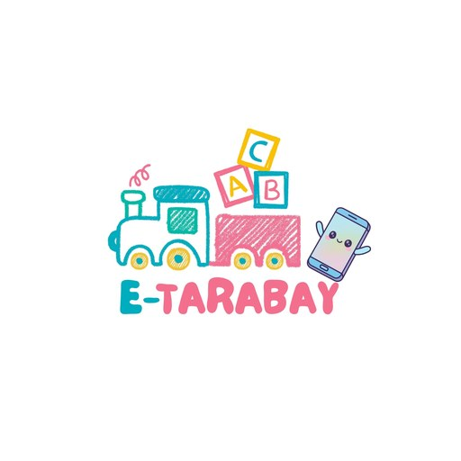

E-Tarabay
Ang Kabataan ay Pag-asa ng Bayan
Para sa Android 5.0 pataas
Nagsimula na ang download. Kapag tapos na, buksan ang file para i-install — tingnan ang mga hakbang sa ibaba.
Tungkol sa app
Ang E-Tarabay ay learning app para sa mga batang nasa daycare, edad 3 hanggang 5. Natututo silang magbasa, magbilang, sumulat at magkulay sa Ilocano, Filipino at English — at gumagana ito kahit walang internet.
May bituin at medalya sa bawat natapos, at Sertipiko ng Pagtatapos kapag natapos ang lahat.
Para sa teacher at magulang
May sariling Talaan ng Guro ang teacher: dito ini-enroll ang mga bata, nakikita ang progress ng bawat isa, at may login card para sa magulang. Protektado ito ng Privacy Agreement (RA 10173) at ng PIN.
Ang magulang ay nagla-login gamit ang username at Student Number ng anak, kaya nasusundan ang progress kahit lumipat ng phone.
Ano ang bago
Paano i-install
- Pindutin ang I-install sa itaas at hintaying matapos ang download.
- Buksan ang na-download na file (E-Tarabay.apk) mula sa notification o sa Downloads.
- Kapag itinanong, payagan ang "Install unknown apps" para sa browser mo, saka bumalik.
- Pindutin ang Install. Tapos na — buksan ang E-Tarabay!
Pag-update: pareho lang ang mga hakbang. Hindi nawawala ang stars, awards at progress ng bata.
Kung v1.2.48 o mas luma ang nasa phone: i-uninstall muna ang lumang E-Tarabay bago i-install ito. Babalik ang stars, awards at progress pagka-sign in ulit.
Impormasyon
| Bersyon | — |
| Na-update | — |
| Laki ng download | — |
| Kailangan | Android 5.0 pataas |
| Mga wika | Ilocano, Filipino, English |
| Presyo | Libre |